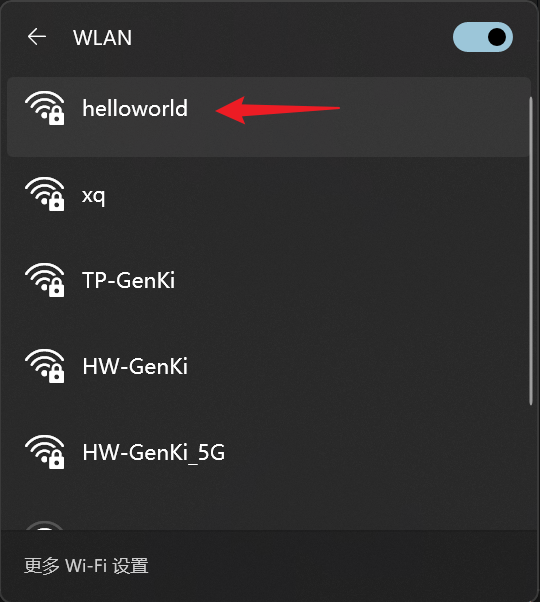
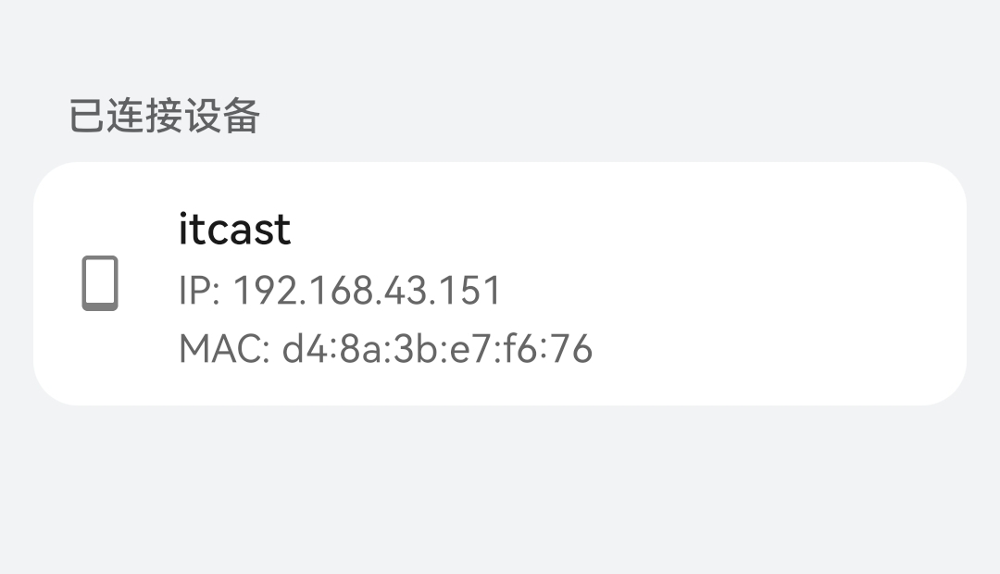

<!DOCTYPE lake>
<h2 data-lake-id="TdvTy" id="TdvTy"><span data-lake-id="ua786cd27" id="ua786cd27">学习目标</span></h2><ul list="u418a36f1"><li data-lake-id="u396ececa" fid="u83b90ced" id="u396ececa"><span data-lake-id="u240c9b97" id="u240c9b97">能够调用AP模式的API实现网络连接</span></li><li data-lake-id="u9a6b8b5c" fid="u83b90ced" id="u9a6b8b5c"><span data-lake-id="u707455db" id="u707455db">能够调用STA模式的API实现网络连接</span></li><li data-lake-id="u33943ed9" fid="u83b90ced" id="u33943ed9"><span data-lake-id="u3505da75" id="u3505da75">能够自定义子系统</span></li></ul><h2 data-lake-id="ny6CX" id="ny6CX"><span data-lake-id="u10cdcec5" id="u10cdcec5">学习内容</span></h2><h3 data-lake-id="TCXIk" id="TCXIk"><span data-lake-id="ue978af24" id="ue978af24">子系统服务构建</span></h3><p data-lake-id="ubfe90090" id="ubfe90090"><span data-lake-id="ued9b6b0e" id="ued9b6b0e">开发中，我们需要构建一些功能执行的底座，提供给其他的调用者使用。</span></p><p data-lake-id="udc825de8" id="udc825de8"><span data-lake-id="u26bc54b5" id="u26bc54b5">例如，wifi功能在我们的开发板中是一个功能服务，只要想上网的都需要使用他。</span></p><p data-lake-id="uae840b14" id="uae840b14"><span data-lake-id="u2f603e5c" id="u2f603e5c">我们可以把wifi功能加入到自己开发板中来。</span></p><h4 data-lake-id="VOcBa" id="VOcBa"><span data-lake-id="u455c1dc7" id="u455c1dc7">开发流程</span></h4><ol list="u041e2d34"><li data-lake-id="u22a901ff" fid="uc4cffbfc" id="u22a901ff"><span data-lake-id="u4029e674" id="u4029e674">在开发板目录下新建一个文件夹</span><code data-lake-id="u3c58c349" id="u3c58c349"><span data-lake-id="u6c6761bc" id="u6c6761bc">services</span></code><span data-lake-id="ub58eff93" id="ub58eff93">。我的开发板目录为</span><code data-lake-id="ucca3390b" id="ucca3390b"><span data-lake-id="u7bbf1380" id="u7bbf1380">device/board/itcast/genkipi</span></code><span data-lake-id="u1f793b84" id="u1f793b84">。</span></li><li data-lake-id="u85c1173e" fid="uc4cffbfc" id="u85c1173e"><span data-lake-id="u7074cb36" id="u7074cb36">在</span><code data-lake-id="uddeb9cee" id="uddeb9cee"><span data-lake-id="uc3fd857c" id="uc3fd857c">services</span></code><span data-lake-id="ua73b8f39" id="ua73b8f39">目录下新建</span><code data-lake-id="u7dfea0c7" id="u7dfea0c7"><span data-lake-id="u2aa1140f" id="u2aa1140f">BUILD.gn</span></code><span data-lake-id="ub44a7e5f" id="ub44a7e5f">文件，并且配置这个</span><code data-lake-id="ufd8a0d76" id="ufd8a0d76"><span data-lake-id="u16a55152" id="u16a55152">BUILD.gn</span></code><span data-lake-id="ud84926be" id="ud84926be">文件。 </span></li><li data-lake-id="ue24aa5b7" fid="uc4cffbfc" id="ue24aa5b7"><span data-lake-id="u061b93b5" id="u061b93b5">在</span><code data-lake-id="u8f8661a1" id="u8f8661a1"><span data-lake-id="u8da0f95b" id="u8da0f95b">services</span></code><span data-lake-id="ud098df89" id="ud098df89">目录下新建</span><code data-lake-id="ua2d44cb1" id="ua2d44cb1"><span data-lake-id="ufbdffc2f" id="ufbdffc2f">wifi</span></code><span data-lake-id="u581b7d1f" id="u581b7d1f">目录，并且在</span><code data-lake-id="u9f272aec" id="u9f272aec"><span data-lake-id="uce87a4c5" id="uce87a4c5">wifi</span></code><span data-lake-id="u6d092bbf" id="u6d092bbf">目录新建</span><code data-lake-id="u00d881f8" id="u00d881f8"><span data-lake-id="u44713854" id="u44713854">BUILD.gn</span></code><span data-lake-id="u8035797a" id="u8035797a">文件。</span></li><li data-lake-id="uad63823f" fid="uc4cffbfc" id="uad63823f"><span data-lake-id="u4ce98317" id="u4ce98317">修改</span><code data-lake-id="ufd58e63b" id="ufd58e63b"><span data-lake-id="u3bcda80d" id="u3bcda80d">vendor/itcast/genkipi</span></code><span data-lake-id="ud643d509" id="ud643d509">目录下的</span><code data-lake-id="ua5000433" id="ua5000433"><span data-lake-id="u8946ed4b" id="u8946ed4b">BUILD.gn</span></code><span data-lake-id="u44683c9d" id="u44683c9d">。</span></li></ol><h4 data-lake-id="zTpUd" id="zTpUd"><span data-lake-id="ubaaea20c" id="ubaaea20c">代码部分</span></h4><span class="yuque-card-unsupported">[codeblock]</span><span class="yuque-card-unsupported">[codeblock]</span><span class="yuque-card-unsupported">[codeblock]</span><span class="yuque-card-unsupported">[codeblock]</span><span class="yuque-card-unsupported">[codeblock]</span><span class="yuque-card-unsupported">[codeblock]</span><span class="yuque-card-unsupported">[codeblock]</span><h4 data-lake-id="mStZx" id="mStZx"><span data-lake-id="ub47f0387" id="ub47f0387">配置说明</span></h4><ol list="u447a0448"><li data-lake-id="ua174f750" fid="u9b45dc93" id="ua174f750"><code data-lake-id="u644b2913" id="u644b2913"><span data-lake-id="u9f7be31c" id="u9f7be31c">vendor/itcast/genkipi/BUILD.gn</span></code><span data-lake-id="u3d935655" id="u3d935655">描述了开发板提供的服务。deps表示编译依赖。</span></li></ol><span class="yuque-card-unsupported">[codeblock]</span><ul data-lake-indent="1" list="u6966948b"><li data-lake-id="ub6a996d9" fid="u3163e94b" id="ub6a996d9"><code data-lake-id="ud24002a0" id="ud24002a0"><span data-lake-id="u8c42cba7" id="u8c42cba7">//device/board/itcast/genkipi/services:genkipi_services</span></code><span data-lake-id="u823dadcb" id="u823dadcb">指向了我们刚刚新建的文件夹</span><code data-lake-id="u563113be" id="u563113be"><span data-lake-id="udbbb8f03" id="udbbb8f03">services</span></code><span data-lake-id="ue65aedc0" id="ue65aedc0">文件夹下的</span><code data-lake-id="ubfa2cd74" id="ubfa2cd74"><span data-lake-id="u01de6670" id="u01de6670">BUILD.gn</span></code><span data-lake-id="uc4b9183b" id="uc4b9183b">文件。</span></li></ul><ol list="uef39ff81" start="2"><li data-lake-id="u1197abd7" fid="uda613908" id="u1197abd7"><code data-lake-id="u69262be0" id="u69262be0"><span data-lake-id="u6a4011b5" id="u6a4011b5">services/BUILD.gn</span></code><span data-lake-id="u32a7d4f4" id="u32a7d4f4">描述的是当前子系统服务的一些配置。</span></li></ol><span class="yuque-card-unsupported">[codeblock]</span><ul data-lake-indent="1" list="u448ac4c3"><li data-lake-id="uce242b82" fid="u8860c196" id="uce242b82"><code data-lake-id="ud56670c0" id="ud56670c0"><span data-lake-id="u91761468" id="u91761468">genkipi_services</span></code><span data-lake-id="uc8351701" id="uc8351701">表示当前子服务名称。</span><code data-lake-id="u7ab08cba" id="u7ab08cba"><span data-lake-id="u7ea5acba" id="u7ea5acba">group</span></code><span data-lake-id="u668924a3" id="u668924a3">表示是一个服务集合。</span></li><li data-lake-id="u14364d4f" fid="u8860c196" id="u14364d4f"><span data-lake-id="u350b5260" id="u350b5260">deps表示依赖。</span></li><li data-lake-id="uc0822af2" fid="u8860c196" id="uc0822af2"><code data-lake-id="u23ffcd87" id="u23ffcd87"><span data-lake-id="u5bdffcdf" id="u5bdffcdf">wifi:genkipi_wifi</span></code><span data-lake-id="uf0fe26ec" id="uf0fe26ec">表示当前</span><code data-lake-id="u8f2080b9" id="u8f2080b9"><span data-lake-id="u4eadcf74" id="u4eadcf74">services</span></code><span data-lake-id="ua456b09c" id="ua456b09c">目录下的</span><code data-lake-id="uaa48315a" id="uaa48315a"><span data-lake-id="u44c50f32" id="u44c50f32">wifi</span></code><span data-lake-id="u9c494d93" id="u9c494d93">目录中</span><code data-lake-id="u34e5f02e" id="u34e5f02e"><span data-lake-id="ubc9f6212" id="ubc9f6212">BUILD.gn</span></code><span data-lake-id="u429d49cb" id="u429d49cb">配置</span></li></ul><ol list="ued0d3b0a" start="3"><li data-lake-id="uecd2a83b" fid="u5ba58ebe" id="uecd2a83b"><code data-lake-id="u74c66f9a" id="u74c66f9a"><span data-lake-id="ua4ac6a9e" id="ua4ac6a9e">services/wifi/BUILD.gn</span></code><span data-lake-id="ub71a643a" id="ub71a643a">为wifi部分的配置。</span></li></ol><span class="yuque-card-unsupported">[codeblock]</span><ul data-lake-indent="1" list="ub5a60686"><li data-lake-id="ud8422180" fid="u0dea4d69" id="ud8422180"><code data-lake-id="uf271f5fd" id="uf271f5fd"><span data-lake-id="uf697ed1d" id="uf697ed1d">sources</span></code><span data-lake-id="u8a4f5b3a" id="u8a4f5b3a">表示源码部分</span></li><li data-lake-id="u6b2c6d35" fid="u0dea4d69" id="u6b2c6d35"><code data-lake-id="u0b2812ad" id="u0b2812ad"><span data-lake-id="ua7e41177" id="ua7e41177">include_dirs</span></code><span data-lake-id="u32d0b8ac" id="u32d0b8ac">表示需要引入的头</span></li></ul><h4 data-lake-id="DTN6T" id="DTN6T"><span data-lake-id="uba5b11b2" id="uba5b11b2">AP逻辑说明</span></h4><p data-lake-id="ub3581ddc" id="ub3581ddc"><span data-lake-id="u2e6b78c8" id="u2e6b78c8">AP就是扮演路由器角色，我们开启路由器，需要给路由器配置名称和密码，供其他设备扫描连接用。</span></p><p data-lake-id="u14efccfd" id="u14efccfd"><span data-lake-id="ub9d02693" id="ub9d02693">AP提供了</span><code data-lake-id="uf9bbf5ec" id="uf9bbf5ec"><span data-lake-id="ubc502cab" id="ubc502cab">wifi_ap_start</span></code><span data-lake-id="u5d53440d" id="u5d53440d">函数，就是为这个服务的。</span></p><span class="yuque-card-unsupported">[codeblock]</span><ul list="ud97c9ba8"><li data-lake-id="u51d4244e" fid="ue3167cc7" id="u51d4244e"><span data-lake-id="u3ea3fe92" id="u3ea3fe92">ssid: 路由器的名称</span></li><li data-lake-id="uea091bba" fid="ue3167cc7" id="uea091bba"><span data-lake-id="uf6f2ee7e" id="uf6f2ee7e">password：路由器密码</span></li></ul><p data-lake-id="u19363ad1" id="u19363ad1"><br/></p><h4 data-lake-id="LgwIl" id="LgwIl"><span data-lake-id="ud2105df9" id="ud2105df9">STA逻辑说明</span></h4><p data-lake-id="u5bba1da0" id="u5bba1da0"><span data-lake-id="ufee0e95c" id="ufee0e95c">STA就是扮演类似于手机这种角色，可以连接路由器。</span></p><p data-lake-id="u9cd36039" id="u9cd36039"><span data-lake-id="uf3d4c6f2" id="uf3d4c6f2">STA提供了</span><code data-lake-id="u46147b16" id="u46147b16"><span data-lake-id="u7589e0b0" id="u7589e0b0">wifi_sta_connect</span></code><span data-lake-id="u3f2a1762" id="u3f2a1762">函数，来实现连接路由器的功能。</span></p><span class="yuque-card-unsupported">[codeblock]</span><ul list="u273ae969"><li data-lake-id="u488d3710" fid="u9740fc3e" id="u488d3710"><span data-lake-id="u7ea1f9e8" id="u7ea1f9e8">ssid: 要连接的路由器名称</span></li><li data-lake-id="ud0b0a938" fid="u9740fc3e" id="ud0b0a938"><span data-lake-id="ubf2e6038" id="ubf2e6038">password：要连接的路由器密码</span></li><li data-lake-id="ud843385b" fid="u9740fc3e" id="ud843385b"><span data-lake-id="u9c29b4df" id="u9c29b4df">hostname: 当前设备在路由器中显示的名称</span></li></ul><h3 data-lake-id="J0Id6" id="J0Id6"><span data-lake-id="uc4f25040" id="uc4f25040">AP模式调试</span></h3><h4 data-lake-id="lSkfB" id="lSkfB"><span data-lake-id="ud927a835" id="ud927a835">开发流程</span></h4><p data-lake-id="u50cea6f7" id="u50cea6f7"><span data-lake-id="udb86a021" id="udb86a021">来到</span><strong><span data-lake-id="u9ef25726" id="u9ef25726">应用开发</span></strong><span data-lake-id="u4db63641" id="u4db63641">的</span><strong><span data-lake-id="u5f5bb35f" id="u5f5bb35f">根目录。</span></strong></p><p data-lake-id="u369321a4" id="u369321a4"><span data-lake-id="u2fcc4a8f" id="u2fcc4a8f">我们编写代码的</span><strong><span data-lake-id="u69621125" id="u69621125">根目录</span></strong><span data-lake-id="u578c9e71" id="u578c9e71">为</span><code data-lake-id="uc04e0e93" id="uc04e0e93"><span data-lake-id="u4fa7694c" id="u4fa7694c">device/board/itcast/genkipi/app</span></code><span data-lake-id="u557efe63" id="u557efe63">。</span></p><ol list="u293e2a72"><li data-lake-id="ub3d84f44" fid="u3177aa8f" id="ub3d84f44"><strong><span data-lake-id="u1fcc05e0" id="u1fcc05e0">根目录</span></strong><span data-lake-id="uf2dbe35c" id="uf2dbe35c">下新建</span><code data-lake-id="u1dfee588" id="u1dfee588"><span data-lake-id="u0cc616e6" id="u0cc616e6" style="color: rgb(54, 70, 78); background-color: rgb(245, 245, 245)">ap</span></code><span data-lake-id="u8cc8ee95" id="u8cc8ee95" style="color: rgb(54, 70, 78); background-color: rgb(245, 245, 245)">文件夹，此为</span><strong><span data-lake-id="u52c3ef5f" id="u52c3ef5f" style="color: rgb(54, 70, 78); background-color: rgb(245, 245, 245)">项目目录</span></strong><span data-lake-id="u5a787b9d" id="u5a787b9d" style="color: rgb(54, 70, 78); background-color: rgb(245, 245, 245)">。</span></li><li data-lake-id="u36e1eeca" fid="u3177aa8f" id="u36e1eeca"><span data-lake-id="u572147bc" id="u572147bc" style="color: rgb(54, 70, 78); background-color: rgb(245, 245, 245)">此</span><strong><span data-lake-id="uac405abd" id="uac405abd" style="color: rgb(54, 70, 78); background-color: rgb(245, 245, 245)">项目目录</span></strong><span data-lake-id="u2ae7e7f2" id="u2ae7e7f2" style="color: rgb(54, 70, 78); background-color: rgb(245, 245, 245)">下新建</span><code data-lake-id="u056996bb" id="u056996bb"><span data-lake-id="u046af225" id="u046af225" style="color: rgb(54, 70, 78); background-color: rgb(245, 245, 245)">main.c</span></code><span data-lake-id="u99a1c783" id="u99a1c783" style="color: rgb(54, 70, 78); background-color: rgb(245, 245, 245)">文件</span></li><li data-lake-id="u1b3f37ec" fid="u3177aa8f" id="u1b3f37ec"><span data-lake-id="u623ed7ef" id="u623ed7ef" style="color: rgb(54, 70, 78); background-color: rgb(245, 245, 245)">此</span><strong><span data-lake-id="ua763e567" id="ua763e567" style="color: rgb(54, 70, 78); background-color: rgb(245, 245, 245)">项目目录</span></strong><span data-lake-id="ue7d05019" id="ue7d05019" style="color: rgb(54, 70, 78); background-color: rgb(245, 245, 245)">下新建</span><code data-lake-id="u16f26963" id="u16f26963"><span data-lake-id="u6ab771c1" id="u6ab771c1" style="color: rgb(54, 70, 78); background-color: rgb(245, 245, 245)">BUILD.gn</span></code><span data-lake-id="ud73b704a" id="ud73b704a" style="color: rgb(54, 70, 78); background-color: rgb(245, 245, 245)">文件</span></li><li data-lake-id="u4ef0faff" fid="u3177aa8f" id="u4ef0faff"><span data-lake-id="u27e873ed" id="u27e873ed" style="color: rgba(0, 0, 0, 0.87)">修改</span><strong><span data-lake-id="ucef697da" id="ucef697da" style="color: rgba(0, 0, 0, 0.87)">根目录</span></strong><span data-lake-id="u4229f8f3" id="u4229f8f3" style="color: rgba(0, 0, 0, 0.87)">下的</span><code data-lake-id="uc159067c" id="uc159067c"><span data-lake-id="uf97bc664" id="uf97bc664" style="color: rgba(0, 0, 0, 0.87)">BUILD.gn</span></code><span data-lake-id="u7e36aa92" id="u7e36aa92" style="color: rgba(0, 0, 0, 0.87)">文件</span></li></ol><h4 data-lake-id="Rulgb" id="Rulgb"><span data-lake-id="uf1d04561" id="uf1d04561">代码部分</span></h4><span class="yuque-card-unsupported">[codeblock]</span><span class="yuque-card-unsupported">[codeblock]</span><span class="yuque-card-unsupported">[codeblock]</span><h4 data-lake-id="bFr9C" id="bFr9C"><span data-lake-id="u1e869397" id="u1e869397">校验</span></h4><p data-lake-id="uc0e06fee" id="uc0e06fee"></p><h3 data-lake-id="QeE8s" id="QeE8s"><span data-lake-id="u0424b95e" id="u0424b95e">STA模式调试</span></h3><h4 data-lake-id="TrZ9y" id="TrZ9y"><span data-lake-id="u53300ba5" id="u53300ba5">开发流程</span></h4><p data-lake-id="u8e630ab0" id="u8e630ab0"><span data-lake-id="u208c940e" id="u208c940e">来到</span><strong><span data-lake-id="uca9e4325" id="uca9e4325">应用开发</span></strong><span data-lake-id="ua8d62472" id="ua8d62472">的</span><strong><span data-lake-id="ue701db41" id="ue701db41">根目录。</span></strong></p><p data-lake-id="ub47cdbe6" id="ub47cdbe6"><span data-lake-id="u22e2681b" id="u22e2681b">我们编写代码的</span><strong><span data-lake-id="ue41677c1" id="ue41677c1">根目录</span></strong><span data-lake-id="u9dc0301c" id="u9dc0301c">为</span><code data-lake-id="u1ec3248a" id="u1ec3248a"><span data-lake-id="ubae59e68" id="ubae59e68">device/board/itcast/genkipi/app</span></code><span data-lake-id="u67758799" id="u67758799">。</span></p><ol list="ueecbaf86"><li data-lake-id="u03d484d3" fid="u3177aa8f" id="u03d484d3"><strong><span data-lake-id="uea7392ae" id="uea7392ae">根目录</span></strong><span data-lake-id="u39afc526" id="u39afc526">下新建</span><code data-lake-id="uef05e6d1" id="uef05e6d1"><span data-lake-id="u46c900e7" id="u46c900e7" style="color: rgb(54, 70, 78); background-color: rgb(245, 245, 245)">sta</span></code><span data-lake-id="udd99138a" id="udd99138a" style="color: rgb(54, 70, 78); background-color: rgb(245, 245, 245)">文件夹，此为</span><strong><span data-lake-id="u6ca16062" id="u6ca16062" style="color: rgb(54, 70, 78); background-color: rgb(245, 245, 245)">项目目录</span></strong><span data-lake-id="ucdabda16" id="ucdabda16" style="color: rgb(54, 70, 78); background-color: rgb(245, 245, 245)">。</span></li><li data-lake-id="u8c893ad6" fid="u3177aa8f" id="u8c893ad6"><span data-lake-id="uba8868c2" id="uba8868c2" style="color: rgb(54, 70, 78); background-color: rgb(245, 245, 245)">此</span><strong><span data-lake-id="u398b2c60" id="u398b2c60" style="color: rgb(54, 70, 78); background-color: rgb(245, 245, 245)">项目目录</span></strong><span data-lake-id="ua5a19556" id="ua5a19556" style="color: rgb(54, 70, 78); background-color: rgb(245, 245, 245)">下新建</span><code data-lake-id="u41701ac6" id="u41701ac6"><span data-lake-id="u7ec7d699" id="u7ec7d699" style="color: rgb(54, 70, 78); background-color: rgb(245, 245, 245)">main.c</span></code><span data-lake-id="u457de072" id="u457de072" style="color: rgb(54, 70, 78); background-color: rgb(245, 245, 245)">文件</span></li><li data-lake-id="u3bd25dfb" fid="u3177aa8f" id="u3bd25dfb"><span data-lake-id="ub269a58f" id="ub269a58f" style="color: rgb(54, 70, 78); background-color: rgb(245, 245, 245)">此</span><strong><span data-lake-id="u7f8bf171" id="u7f8bf171" style="color: rgb(54, 70, 78); background-color: rgb(245, 245, 245)">项目目录</span></strong><span data-lake-id="u0f63f28c" id="u0f63f28c" style="color: rgb(54, 70, 78); background-color: rgb(245, 245, 245)">下新建</span><code data-lake-id="uea203bf5" id="uea203bf5"><span data-lake-id="u2269e44f" id="u2269e44f" style="color: rgb(54, 70, 78); background-color: rgb(245, 245, 245)">BUILD.gn</span></code><span data-lake-id="u83b769b1" id="u83b769b1" style="color: rgb(54, 70, 78); background-color: rgb(245, 245, 245)">文件</span></li><li data-lake-id="u15ec95eb" fid="u3177aa8f" id="u15ec95eb"><span data-lake-id="u9c2d06a2" id="u9c2d06a2" style="color: rgba(0, 0, 0, 0.87)">修改</span><strong><span data-lake-id="ud6a9c5d9" id="ud6a9c5d9" style="color: rgba(0, 0, 0, 0.87)">根目录</span></strong><span data-lake-id="uba9087ea" id="uba9087ea" style="color: rgba(0, 0, 0, 0.87)">下的</span><code data-lake-id="u3a455edf" id="u3a455edf"><span data-lake-id="u09e098f3" id="u09e098f3" style="color: rgba(0, 0, 0, 0.87)">BUILD.gn</span></code><span data-lake-id="u1c4347c9" id="u1c4347c9" style="color: rgba(0, 0, 0, 0.87)">文件</span></li></ol><h4 data-lake-id="VXbNh" id="VXbNh"><span data-lake-id="uabb4762e" id="uabb4762e">代码部分</span></h4><span class="yuque-card-unsupported">[codeblock]</span><span class="yuque-card-unsupported">[codeblock]</span><span class="yuque-card-unsupported">[codeblock]</span><h4 data-lake-id="YkC9E" id="YkC9E"><span data-lake-id="uacd71159" id="uacd71159">校验</span></h4><p data-lake-id="ua52209ec" id="ua52209ec"></p><h2 data-lake-id="EI3co" id="EI3co"><span data-lake-id="ud4c74040" id="ud4c74040">练习题</span></h2><ul list="u47a05384"><li data-lake-id="ue2888b6b" fid="u28e2dae7" id="ue2888b6b"><span data-lake-id="u0ad2dae1" id="u0ad2dae1">通过代码实现AP</span></li><li data-lake-id="ub8465072" fid="u28e2dae7" id="ub8465072"><span data-lake-id="u273b8a41" id="u273b8a41">通过代码实现STA</span></li></ul><p data-lake-id="u197b4a65" id="u197b4a65"><br/></p>